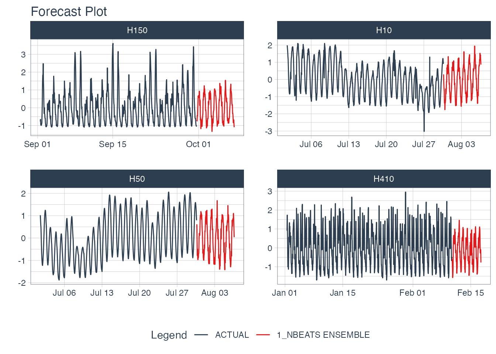
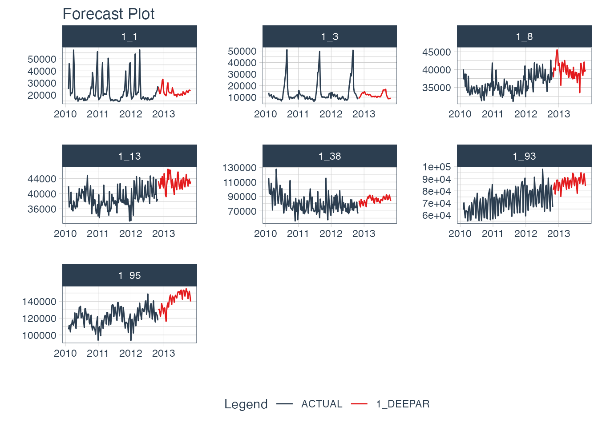

Making an DeepAR Model
Let’s get started by making a DeepAR Model. In a matter of minutes, you’ll generate the 7 forecasts shown below. If you’d like to improve your time series forecasting abilities, then please take my High-Performance Time Series Course.

Installation
Next, set up the Python Environment with install_gluonts(). You only need to run this one time, and then you are good to go.
We have a more detailed installation instructions and troubleshooting guidance in our Installation Guide.
Time Series Data
We’ll use the walmart_sales_weekly dataset, which contains 7 weekly time series of sales data for various departments in a Walmart Store.
data <- walmart_sales_weekly %>%
select(id, Date, Weekly_Sales) %>%
set_names(c("id", "date", "value"))
data %>%
group_by(id) %>%
plot_time_series(
date,
value,
.facet_ncol = 3,
.interactive = FALSE
)
We’ll create the forecast region using future_frame(). We are forecasting 1 week (24x7 timestamps) into the future.
HORIZON <- 52
new_data <- data %>%
group_by(id) %>%
future_frame(.length_out = HORIZON) %>%
ungroup()
new_data
#> # A tibble: 364 × 2
#> id date
#> <fct> <date>
#> 1 1_1 2012-11-02
#> 2 1_1 2012-11-09
#> 3 1_1 2012-11-16
#> 4 1_1 2012-11-23
#> 5 1_1 2012-11-30
#> 6 1_1 2012-12-07
#> 7 1_1 2012-12-14
#> 8 1_1 2012-12-21
#> 9 1_1 2012-12-28
#> 10 1_1 2013-01-04
#> # … with 354 more rowsMaking a DeepAR Model
We’ll create a DeepAR model using the deep_ar() function.
- This is a univariate modeling algorithm that uses Deep Learning and Autoregression.
- We select the GluonTS version by setting the engine to
gluonts_deepar.
Forecasting
With a model in hand, we can simply follow the Modeltime Workflow to generate a forecast for the multiple time series groups.
modeltime_forecast_tbl <- modeltime_table(
model_fit_deepar
) %>%
modeltime_forecast(
new_data = new_data,
actual_data = data,
keep_data = TRUE
) %>%
group_by(id) We can visualize the forecast with plot_modeltime_forecast().
modeltime_forecast_tbl %>%
plot_modeltime_forecast(
.conf_interval_show = FALSE,
.facet_ncol = 3,
.facet_scales = "free",
.interactive = FALSE
)
Saving and Loading Models
GluonTS models will need to “serialized” (a fancy word for saved to a directory that contains the recipe for recreating the models). To save the models, use save_gluonts_model().
- Provide a directory where you want to save the model.
- This saves all of the model files in the directory.
model_fit_deepar %>%
save_gluonts_model(path = "deepar_model", overwrite = TRUE)You can reload the model into R using load_gluonts_model().
model_fit_deepar <- load_gluonts_model("deepar_model")Take the High-Performance Forecasting Course
Become the forecasting expert for your organization
High-Performance Time Series Course
Time Series is Changing
Time series is changing. Businesses now need 10,000+ time series forecasts every day. This is what I call a High-Performance Time Series Forecasting System (HPTSF) - Accurate, Robust, and Scalable Forecasting.
High-Performance Forecasting Systems will save companies by improving accuracy and scalability. Imagine what will happen to your career if you can provide your organization a “High-Performance Time Series Forecasting System” (HPTSF System).
How to Learn High-Performance Time Series Forecasting
I teach how to build a HPTFS System in my High-Performance Time Series Forecasting Course. You will learn:
-
Time Series Machine Learning (cutting-edge) with
Modeltime- 30+ Models (Prophet, ARIMA, XGBoost, Random Forest, & many more) -
Deep Learning with
GluonTS(Competition Winners) - Time Series Preprocessing, Noise Reduction, & Anomaly Detection
- Feature engineering using lagged variables & external regressors
- Hyperparameter Tuning
- Time series cross-validation
- Ensembling Multiple Machine Learning & Univariate Modeling Techniques (Competition Winner)
- Scalable Forecasting - Forecast 1000+ time series in parallel
- and more.
Become the Time Series Expert for your organization.